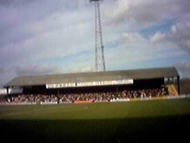
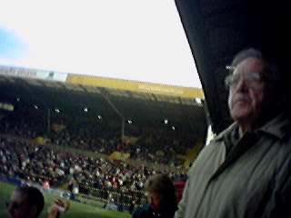
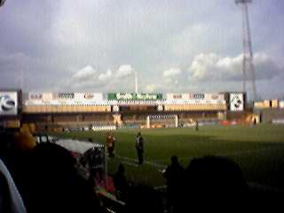
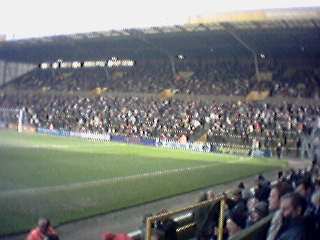
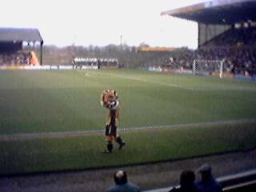
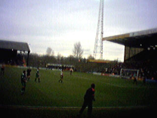

We went to Boothferry Park, home of Hull City to watch the Hull vs Barnet game. Hull won 2-1 after having gone 1-0 down in the first half. It was the first home match I'd seen for a while, and a good crowd were present (7,268) to see another win, making it 5 wins in a row.
|  |  |
| Our view of Kempton | My Dad and the South stand |
|  |  |
| Our view of an empty North stand | The South stand |
|  |  |
| Roary the tiger does his rounds | The game |
Back to index page